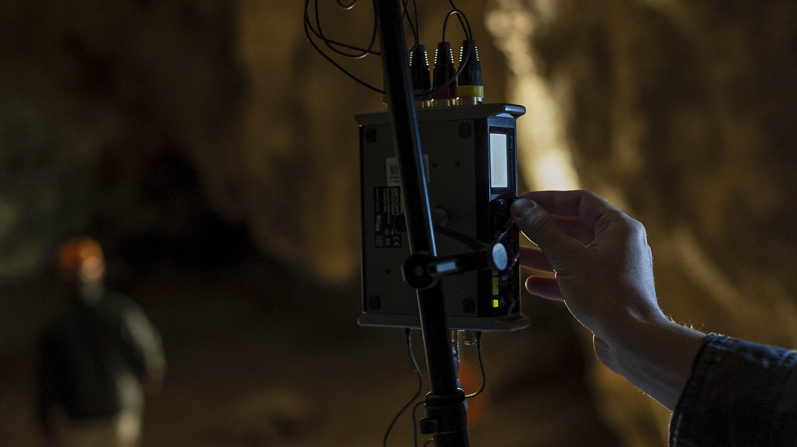
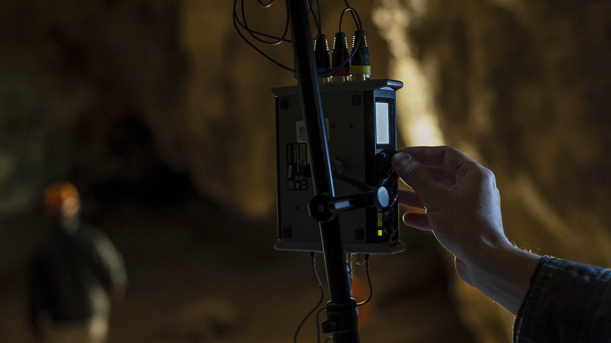
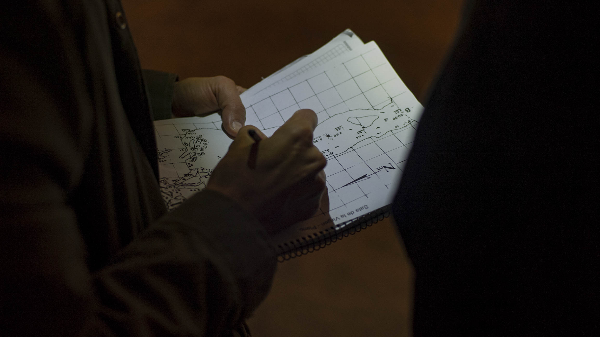
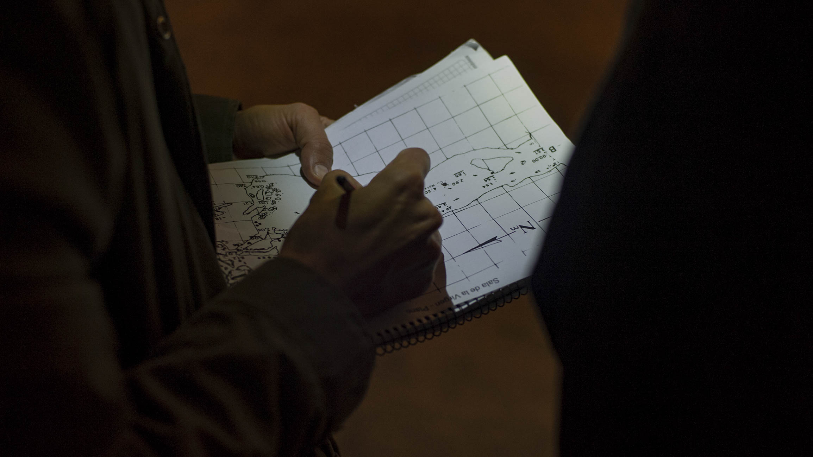
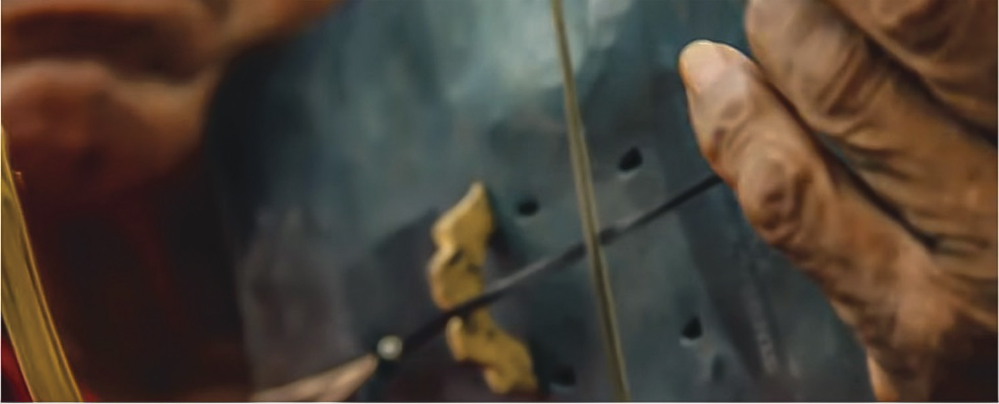
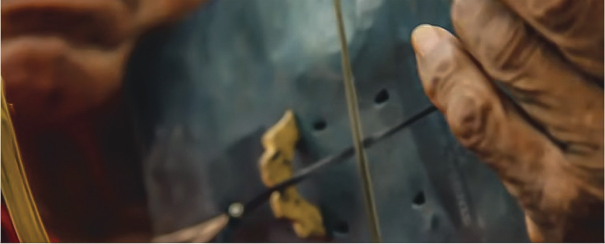

Projeto GRAPa
Grupo de Relevamie1nto Acústico del Patrimonio
Projeto GRAPa é composto por uma série de trabalhos individuais de estudos inter-relacionada, registro e promoção do patrimônio Acústico de diferentes regiões do nosso país.
-
Estudos acústicos em áudio 3D
-
Registros musicais e / ou rituais patrimoniais em Realidade Virtual
-
Incentivo da criação musical para obras site specific
-
Série audiovisual de micro documentários reunindo o trabalho realizado

Os sons no espaço
A criação e a execução musical no Ocidente são regidas por parâmetros estabelecidos, nos quais, tanto intérpretes, quanto ouvintes, mantêm locais estáticos e predefinidos, como um teatro, onde o público tem seu lugar na platéia, enquanto os artista permanecem no palco à frente.
Para entender as práticas musicais e rituais que nos antecedem e estão alheias a esses modos, é necessário experienciá-las de maneira que se recriem. A grande maioria dos casos propõem experiências imersivas de escuta, nas quais o próprio espaço desempenha um papel fundamental expandindo a percepção sonora além dos limites visuais.
Buscando oferecer ao espectador uma experiência acústica e visual completa, e para tal, dispomos de uma tecnologia específica para registrar as músicas e rituais.
A gravação imersiva em áudio e vídeo permite difundir essas práticas de uma maneira muito mais próxima de uma descrição * emic *, enquadrada em seu lugar de origem e enriquecendo a compreensão da visão de mundo que comunidades expressam em suas práticas culturais.
 

O patrimônio acústico

Nos referimos ao patrimônio acústico como aqueles lugares que, por suas características morfológicas e ambientais envolvem a experiência auditiva como uma parte inseparável do ambiente.
Esses aspectos acústicos variam ao longo do tempo como consequência do uso, das transformações ambientais e da degradação de seus materiais.
Por esse motivo, consideramos necessário retratar esses espaços através de estudos acústico e morfológico para preservar suas características.
Registramos estas particularidades sonoras realizando medições acústicas específicas por meio de Respostas ao Impulso com microfones Ambisonics e fontes direcionais.
Desta forma, buscamos explorar as particularidades que cada espaço oferece
por meio de estudos antropológicos e entrevistas a quem visita e os utiliza
constantemente.
Estudos acústicos
 

Em cada espaço, foram realizados uma série de estudos topográficos e acústicos com o intuito de reunir dados, os mais fielmente possíveis, a respeito das particularidades de cada formação e das posições de cada emissor e receptor.
Devido às características topográficas desses espaços (grande irregularidade de suas paredes e solo desnivelado) é necessário fazer grades rômbicas a uma altura fixa que permita aliviar as diferentes posições da fonte e do receptor com um referência clara, cobrindo quatro pontos extremos do local, usando como ferramenta de replanejamento um nível topográfico.
Assim, fica à disposição, um banco de Respostas de Impulso (IR) em Ambisonics
(Formato B) para ser usado na pós-produção de áudio, para fins educacionais ou de
qualquer outro interesse:
Registro Audiovisual

Realizamos uma série de documentários audiovisuais que mostram o trabalho de campo (estudos e registros acústicos musicais).
Esta série mostra como a exploração de cada espaço (estudo morfológico e sonoro em cada caso) é exposta e aprimorada ao experimentá-la através do som produzido pelos instrumentos e vozes próprias de cada prática musical em diálogo com a paisagem.
Práticas Musicais em Realidade Virtual


Para registrar as músicas de diferentes espaços, utilizamos tecnologias de filmagem e gravação de som específicas.
O registro imersivo de áudio e vídeo permite transmitir o canto do acorde à sua prática e enquadrado em seu lugar de origem. A partir dos mecanismos reprodução para Realidade Virtual, o espectador tem um vivência mais completa, sendo capaz de situar-se em pontos onde que a expressão artística se torna mais relevante, como por exemplo, em uma rodada de copleras em que se registra a partir do centro da roda.
Na província de Salta (Argentina), a reconhecida coplera Mariana Carrizo encontra uma profunda relação entre o canto com caixa e os vales, em cujas paisagens aprendeu a cantar em sua infância. Sua participação no Projeto GRAPa foi indispensável para o reconhecimento e aprendizado do Canto de Copla em relação à paisagem.
Os lugares e música
Além de levar em conta as características acústicas e a paisagem sonora (únicas, na maioria dos casos) que integram estes espaços onde são realizados os registros, há também outros fatores que os determinam:
-
Uso significativo que tem e teve para a sociedade
-
Atração turística e cultural
-
Acessibilidade
A partir de exaustiva investigação, decidiu-se explorar sete espaços, agrupados em três regiões da Argentina, relacionando cada região com o canto, a música e as expressões culturais que as integram:
-
Região Noroeste
-
Região de Cuyo | Patagônia
-
Região Nordeste


Região Noroeste

A música de Copla
Região caracterizada por Vales e Quebradas adjacentes à Cordilheira dos Andes, conta com áreas protegidas que fizeram parte da antiga trilha Inca na Argentina. Nessa região serão estudados três espaços: "O Anfiteatro" na Quebrada de las Conchas (Salta), Parques Provinciais de Ischigualasto e Talampaya (San Juan) e "La Quebrada de Humahuaca” em La Puna (Jujuy).
A música de Copla é uma das expressões de identidade da região, praticada por diferentes comunidades desde tempos ancestrais e transmitida oralmente.
Sua forma de execução está intimamente ligada ao ambiente natural, razão pela qual consideramos que é um claro expoente do patrimônio acústico e sonoro. Como prática cultural, é ritualizada em rodadas improvisadas onde as caixas e vozes se alternam continuamente.
O Anfiteatro
A menos de 40 quilômetros da cidade de Cafayate, na rota Nacional Nº68, a poucos metros do Rio das Conchas, está * El Anfiteatro*.
Se trata de uma formação rochosa semi-fechada e de forma pseudo-ogival, esculpida pela erosão. Sua forma particular e o material de suas paredes fazem com que tenha uma qualidade acústica excepcional reconhecida na região, e que iniciou, por exemplo, o ciclo do "Concierto en la Montaña", realizado anualmente neste espaço desde 1991.

Região do Cuyo | Patagônica


Música Araucana
Regiões áridas e de estepes, tanto o Cuyo quanto a Patagônia, são reconhecidas por seus climas frios e secos. Nestas áreas, foi decidido trabalhar com formações de cavernas cujos atributos acústicos se distinguem de outros espaços do território argentino. Em particular, serão estudadas duas formações de cavernas significativas em cada região: Caverna das Bruxas no Departamento de Malargüe (Mendoza) e Cueva de las Manos no cânion do Río Pinturas (Santa Cruz).
Essas regiões foram habitadas pelas comunidades Huarpe e Mapuche, as quais expressaram uma variedade de músicas recreativas ligadas às suas crenças. O canto xamânico e o tambor predominaram nos dois casos como elemento de identidade. Além destas, as tribos pré-tehuelches (Aoni-Kenk) - muito mais relacionadas ao cânion do Rio Pinturas - também apresentaram um grupo variado de instrumentos como o koolo, o Rambo, o Aple, El Chelper e o chocalho, além do seu canto.
Caverna das Bruxas
É uma formação de caverna fechada, localizada a 8 km ao norte de R.N. 40, perto da cidade de Bardas Blancas, no Vale do Rio Grande, ao sul da província de Mendoza, na região do Departamento de Malargüe.
Nosso estudo está focado na sala mais ampla e acessível, reconhecida por suas características acústicas e passagem de comunidades pré-existentes chamadas * Sala da Virgem*.
Seu acesso fechado, com aproximadamente 15 metros de comprimento, dá a uma sala com 35 metros de profundidade e 20 metros de largura, aproximadamente, com uma altura irregular que atinge 10 metros em alguns pontos.


Região Nordeste
 

Música Qom
Desta região propõe-se estudar dois Parques Nacionais conhecidos como: El Impenetrable (Chaco) e Iguazú (Misiones). Ambos são caracterizados por sua fauna e flora, as quais possuem centenas de espécies, hoje ameaçadas de extinção. Dessa forma, suas Áreas Protegidas gozam de uma paisagem sonora única na Argentina.
Culturalmente, esses espaços eram habitados por comunidades entre as quais se destacam os Guaycurúes, conhecidos como Qom. Suas práticas musicais se expressam em coexistência com a paisagem sonora que a origina. Destacam-se por canções coletivas e solistas acompanhadas por instrumentos como n’viqué (um tipo de violino de corda única) e instrumentos de percussão, como vagens de alfarroba, cascos, maracas e chocalhos de abóbora como o cartexetẽ .
Sobre o Projeto G.R.A.Pa
O Projeto G.R.A.Pa. foi formado em 2017 com base na cooperação entre a Universidade Nacional de Quilmes (UNQ) e a Universidade Católica de Salta (UCaSal) com o intuito de realizar um estudo acústico do Anfiteatro Natural da Quebrada de las Conchas. Em 2018 expandimos os objetivos do projeto relacionando-o com o Canto de Copla originado a partir do próprio entorno sonoro. Desde então, contamos com a participação da coplera saltenha, Mariana Carrizo, artista comprometida com a luta pela preservação e revalorização deste canto ancestral.
A partir daí, iniciamos um projeto de pesquisa e produção de conteúdos imersivos, nos quais a relação entre música nativa e seus ambientes acústicos naturais se expressem com claridade. Nosso objetivo é documentar o Patrimônio Acústico, que entendemos abranger tanto a música em si, quanto o ambiente acústico e sonoro em que é criada.

Membros
Francisco Durante
Francisco Durante é licenciado em Música e Tecnologia (UNQ) e mestre de obras dedicado à pesquisa, projeto e construção com materiais naturais e permacultura. Trabalha como compositor em diferentes projetos artísticos multidisciplinares onde a música tradicional está vinculada com novas tecnologias e o espaço.
Damian Payo
Damian Payo é licenciado em Música e Tecnologia (UNQ). Atualmente trabalha como professor e pesquisador da Universidade Católica de Salta, na cidade Capital de Salta, onde se aprofundou nos estudos de “Acústica de salas não convencionais”, e tem organizado Conferências e Seminários voltados à área de Acústica e Áudio Digital.

Manuel Eguía
Manuel Eguía é doutor em Física (UBA) e pesquisador do CONICET e UNQ, onde dirige o Laboratório de Acústica e Percepção Sonora (LAPSo), grupo onde realizou inúmeras pesquisas sobre percepção espacial auditiva e dispositivos que modificam o campo sonoro com meios puramente acústicos.
Mauro Zannoli
Mauro Zannoli é licenciado em Composição com Meios Eletroacústicos (UNQ), compositor, programador e designer sonoro. Em seu trabalho, tem um forte interesse na utilização do espaço como um parâmetro a mais para relacionar ao som tanto na música, como na arte sonora. Executa instalações de sistemas Ambisonics em diversos teatros para obras específicas.
Lisandro Fernandez
Lisandro Fernandez é licenciado em Música e Tecnologia (UNQ), e músico dedicado ao estudo de sistemas. Participa ativamente do Laboratório de Software Livre/Libre. Dedica-se a pesquisar, produzir e divulgar ferramentas de informática, trabalho que o levou a expor em distintas conferências e congressos relacionados à programação e arte interativa em diferentes lugares Iberoamericanos.
Juan Barthe
Juan Barthe é repórter gráfico e produtor audiovisual. Produziu mais de 50 curtas, dentre os quais alguns ocuparam os primeiros lugares em competições nacionais e estaduais. Trabalhou para marcas de aventura como SOX, Columbia, Red Bull, Sckechers, entre outras. Seu interesse pelas relações humanas em sociedade o levou a participar de diferentes projetos de documentários audiovisuais, enveredando para novos caminhos, acompanhado pela implementação de novas técnicas para contar histórias.

Apoios e Colaborações
Colaborações
Em cada local, recebemos a colaboração de:
-
Salta:
-
-
Mendoza:
-


A todos os colaboradores, o profundo agradecimento de todos nós, integrantes, do Projeto GRAPA.
Produtor associado
Contato
Correio: info@proyectograpa.com
Telefone: +54 9 387 4491 448 || +54 9 11 3177 2675